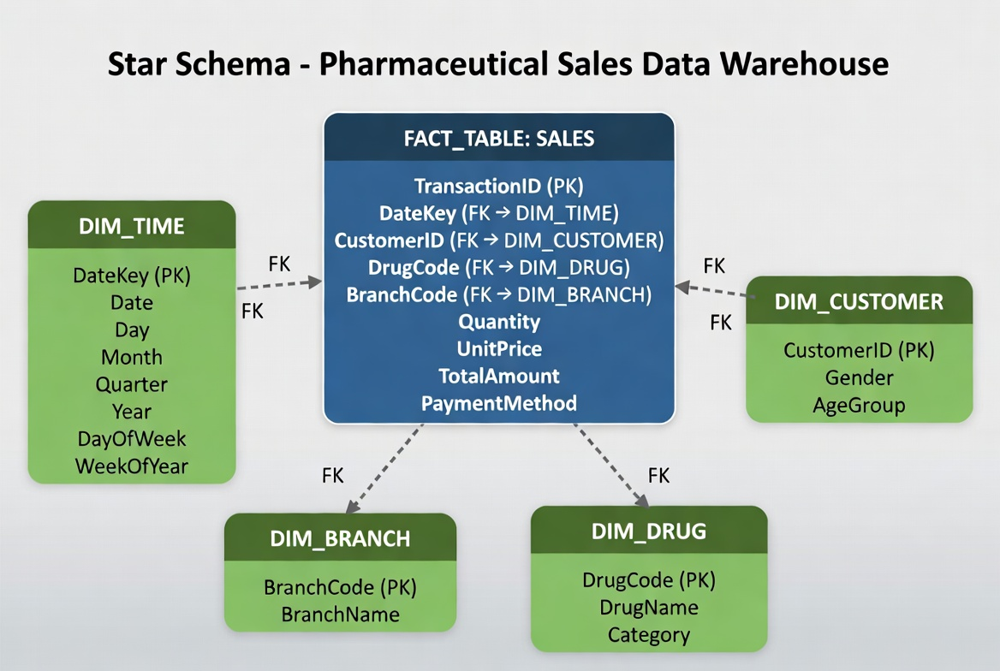

Comprehensive Analysis and Dimensional Modeling
This project focuses on designing and implementing a multidimensional data model (Star Schema) for a pharmaceutical chain. The goal is to provide a foundation for sales analysis, customer pattern recognition, and managerial decision-making.
The Star Schema is a dimensional data model used in OLAP systems. It consists of a central Fact Table and multiple Dimension Tables.

| Table Name | Type | Records | Description |
|---|---|---|---|
FACT_SALES |
Fact Table | 5,000 | All pharmaceutical sales transactions |
DIM_TIME |
Dimension | 366 | All days of year 2024 |
DIM_CUSTOMER |
Dimension | 4,347 | Customer demographic information |
DIM_DRUG |
Dimension | 20 | Drug catalog (20 types) |
DIM_BRANCH |
Dimension | 10 | Pharmacy branches |
Covers: Date, Day, Month, Quarter, Year, DayOfWeek, WeekOfYear
Purpose: Temporal analysis of sales (daily, monthly, quarterly)
Covers: CustomerID, Gender, AgeGroup
Age Groups: <18, 18-35, 36-50, 51-65, >65
Purpose: Customer segmentation and behavior analysis
Covers: DrugCode, DrugName, Category
Categories: 13 pharmaceutical drug categories
Purpose: Sales analysis by drugs and categories
Covers: BranchCode, BranchName
Count: 10 branches (B001 to B010)
Purpose: Revenue comparison across pharmacy units
The Fact Table contains all sales transactions. Each row represents a purchase.
| Column | Data Type | Description |
|---|---|---|
Quantity |
Integer | Units of drugs sold (1-4) |
UnitPrice |
Decimal | Price per unit (Iranian Rials) |
TotalAmount |
Decimal | Total transaction amount |
PaymentMethod |
String | Cash, Card, Insurance, Check |
Pivot tables enable multidimensional analysis across different dimensions:
This project demonstrates how Star Schema enables comprehensive analysis of pharmaceutical sales data. By designing proper data structure and creating multiple pivot tables, organizations can: